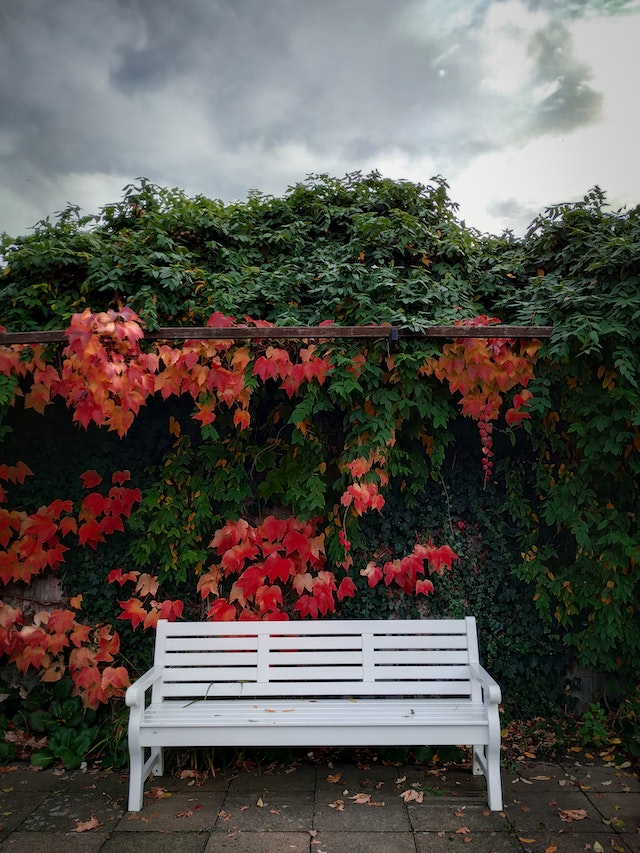
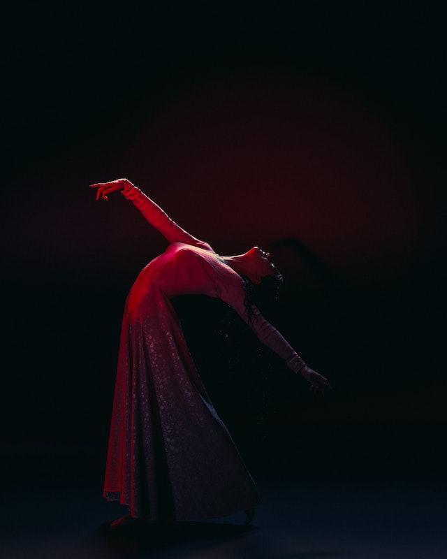

-

Huntings with Alpafriends
Follow the life of Fred, an entusiasthic alpaca, as he travels the Alps to form his own friend group, The Alpafriends.
-

Ourselves after pure joy
Mark and Veronica met while traveling, instantly fell in love and got married spontaneously. Could their love be strong enough to pass the test of coming back to real life after both their holidays are over?
-

The call
When the skilled swindler Amanda is staying alone in a fancy hotel she got for the night, she receives a phone call from an unkwown number. After answering it she learns that the voice on the other end is her future self, warning her that a killer is looming.
-

Where did I left my keys?
Jenny went out to party one night as usual, but tonight when returning home she realized something was missing. Where did she left her keys??
-

Heights and heists
Come and meet 5 different extreme sports athletes that are forced to use their skills for heists in the world's most exotic locations.
-

The Awakening
On her 18th birthday Karina recieved a misterious letter full of the scent of flowers. The letter only had flowers drawn in it, but she knew what they meant, having studied the language of flowers since little, she had finally achieved her goal, to get accepted by the Fleur d'Or witchcraft elite school.
-

What remains
A schoolgirl discovers that her new school is haunted by the ghost of a former student who was brutally murdered inside the school by a still unkwown killer. Olivia has to find out what happened to that girl since she started receiving threats saying "You're next".
-

My last words to you
After 15 years married to Dylan, Kim discovers that her husband is not who he seems to be and sets out to uncover his true identity. All of the clues pointed that even the way they met was calculated by him. Were all the lovely moments they spent together at that bench in the park a lie?
-

The Ruby Curse
The life goal of Minty's entire existence was to sit at the throne and be able to rule this god forsaken country, and she finally did it. But things take a dark turn after learning that the Holy Ruby Gloves that pass through ceremony to each governor have a curse that allows it to control the wearer's will. Can she overcome the curse before the gloves take over her entire identity?
-

Met through the flowers
Taking his usual stroll through the park, Jin stops near the same bushes to admire the same girl he has been eyeing for the past month, always finding her staring at the flowers. Not wanting to appear like a creep any longer he decides to continue on his way, but today a sweet voice stops him, "Could you take a photo of me please?"
-

The cursed town
In a remote area of Nebraska, there is a town that is not located on any map, where the sun never rises, and its inhabitants struggle to break the curse that keeps them in eternal darkness.
-
Starting anew
Meeting on a crowded beach felt like a coincidence back in 2012, but it started to feel like destiny after meeting again on the same crowded beach 10 years later.
-

High School Sweethearts
A drama revolving around the complications and sweetness of first love and how it shapes the lives of two high school sweethearts, that are already well grown into their thirties.
-

My all
This is Sena's last dance before she has to retire. She didn't want to, but the board was making her do it due to last year's incident. Read the story of upmost determination of someone entirely dedicated to her art.
-

Judgement
Miguel's life is turned upside down when he is falsely accused of a crime he didn't commit.
-

Starting anew
Steven has uploaded his consciousness to a simulated reality looking to scape from the sad reality that was his life for him. Now he finds himself fighting to return to his real body and world.
-

Parallel
In this story, the reflections that we see of ourselves are actually us in a parallel universe — with a different consciousness they are planning to do whatever it takes to take our place and get rid of us